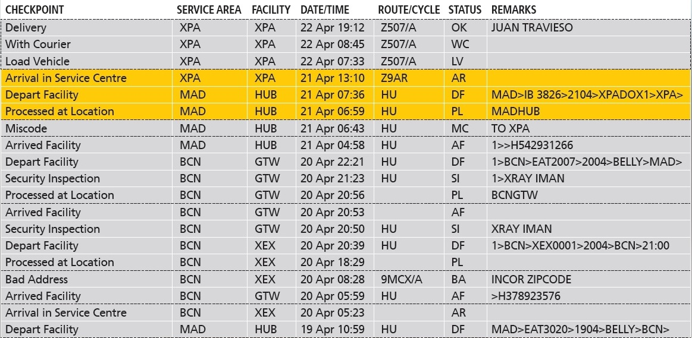

RegEx for SDL Trados Studio 2014
RegEx for SDL Trados Studio 2014
Trados uses “RegEx” in the filter box. With these “regular expressions” you can search for various alternatives at once. This is especially useful in languages with cases where a term can appear in different spellings (for example the German word for “mouse”: Maus, Mäuse, Mäusen) or if you want to search something in the English but you know that there might be another word in between sometimes.
Let’s take as example the German translation for “Global Network”: Globales Netzwerk, globale Netzwerk, globalen Netzwerk are all perfectly fine expressions in a running sentence. Searching all of them one by one would be annoying, but RegEx makes it easy!
| What we want to find: | Globales Netzwerk |
| globale Netzwerk | |
| globalen Netzwerk | |
| globale erfolgreiche Netzwerk | |
| globalen starken Netzwerk | |
| How we can find all of them: | Globale(.*)Netzwerk |
(.*) can stand for anything. This even means nothing. Thus, Globale(.*)Netzwerk would also return it without a space: GlobaleNetzwerk.
When you are sure that there should be something in between, it would be best to use (.+). Please see in the table below how to find Network with several regular expressions.
| (.+) | At least 1 character or more | N(.+)ork |
| (.) | Exactly 1 single character | N(.)twork |
| (..) | Exactly 2 single characters | N(..)work |
| (.*) | Anything, even nothing | N(.*)ork |
| Net(.*)work | ||
| [0-9] | A single digit number from 0 to 9 | |
| [3-6] | A single digit number from 3 to 6 | Finds: 3, 4, 5, 6 |
| Excludes: 0, 1, 2, 7, 8, 9 |
If you want to search something with special characters, you often have to “escape” them with a backslash \. So for example when you are searching for anything in between brackets, as in the example below.
| What we want to find: | (Accepted) |
| (Rejected) | |
| (Delivered) | |
| How we can find all of them: | \((.*)\( |
Real Life Example
There was an issue with a project, see the screenshot above: The entire module was full of time codes and we wanted to revert back to English on all of them. Here’s how we managed to filter for all of them and only them in Trados: [0-9](.*):[0-6][0-9]
[0-9](.*):[0-6][0-9] filters for: Any number from 0-9, followed by absolutely anything, followed by a colon (:), followed by any number between 0 and 6, followed by any number between 0 and 9.
The second to last search entry ranges only from 0 to 6 because there are only 60 minutes on the clock and not 70, 80 etc.